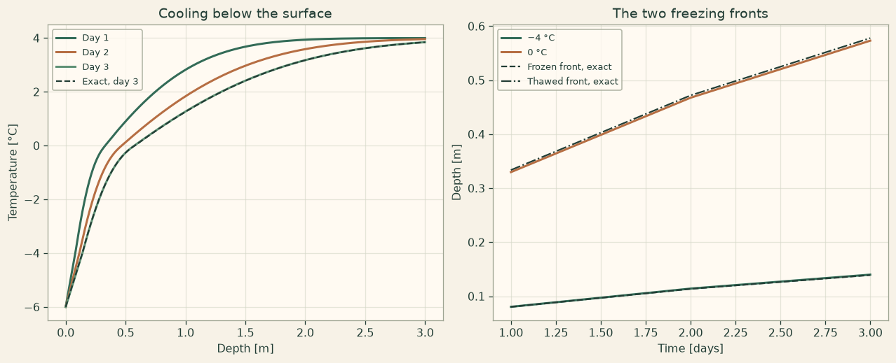

Docs › Examples › Freezing fronts in a soil column
Heat transfer with phase change · 1D
Freezing fronts in a soil column
Trace the frozen and partially frozen zones as a −6 °C surface cools an initially warm soil column over three days.
Run locally with OneSimulation. The example downloads are free. Running them requires an activated runtime. Runtime Alpha 0.2.1a8 · CPython 3.13 on macOS (Apple Silicon), Ubuntu 22.04 (x86-64), and Windows x64. Installation and activation · View pilot plans. Scope of the reference checks.


What it computes
OneSimulation advances transient heat conduction on a graded line mesh. Temperature-dependent tabulated properties spread the latent heat over the −4 °C to 0 °C interval, with a 0.3 K smoothing ramp at either end.
What it checks
On 190 cells the maximum daily RMS difference from the three-zone Lunardini temperature profile is 0.008 K. The largest depth error of either freezing front over the three days is 4.8 mm, down from 5.8 mm on 95 cells.
The notebook
The complete notebook, cell by cell. Run it to produce the figures and the comparison printout.
Cooling warm soil at the surface produces two moving isotherms. Below −4 °C the freezable pore water is frozen, above 0 °C it is liquid, and between them it releases latent heat. The two interfaces in Lunardini’s three-zone solution move as \(\sqrt t\). This is the −4 °C solidus case of InterFrost T1. Soil properties and the published dimensionless front positions come from Tubini, Gruber and Rigon, Appendix F.
import numpy as np
from scipy.special import erf, erfc
from onesim.cad.d1 import Line
from onesim.materials import TabulatedLaw, ThermalFluid
from onesim.meshing import NonuniformLineMesher
from onesim.numerics import Numerics
from onesim.numerics.fem import FiniteElement, Lagrange
from onesim.numerics.linear import SparseDirect
from onesim.numerics.nonlinear import Newton
from onesim.numerics.time import BackwardEuler
from onesim.physics.heat_transfer import FixedTemperature, HeatConduction, HeatFlux
from onesim.simulation import Problem, Simulation
from onesim.simulation.initial_conditions import InitialValue
from onesim.visualization import plots, theme
theme.set()Material and boundary conditions
The 10 m column starts at 4 °C. Its surface is held at −6 °C and its deep end is insulated. The apparent heat capacity includes the latent heat released between −4 °C and 0 °C. Linear ramps of width 0.3 K round the two property jumps and preserve the area under the latent-heat peak. The material supplies bulk thermal properties to a conduction-only model.
day, kelvin = 86400, 273.15
rho, sensible = 1680 * 1.2, 690030.0
latent = 1680 * (0.2 - 0.0782) * 334560
conductivity = np.array([3.462696, 2.939946, 2.417196])
capacity = np.array([sensible, sensible + latent / 4, sensible])
knots = tuple(kelvin + np.array([-4.15, -3.85, -0.15, 0.15]))
soil = ThermalFluid(density=rho, dynamic_viscosity=1.0,
specific_heat_capacity=TabulatedLaw(knots, tuple(capacity[[0, 1, 1, 2]] / rho), "J/kg/K"),
thermal_conductivity=TabulatedLaw(knots, tuple(conductivity[[0, 1, 1, 2]]), "W/m/K"))
column = Line(start=(0, 0, 0), end=(10, 0, 0))
heat = HeatConduction(domain=column.line, material=soil)
problem = Problem(name="InterFrost T1", geometry=column, physics=(heat,), boundary_conditions=(
FixedTemperature(physics=heat, boundary=column.boundaries.start, value=kelvin-6),
HeatFlux(physics=heat, boundary=column.boundaries.end, value=0)),
initial_conditions=(InitialValue(heat.temperature, kelvin+4),))
method = Numerics(spatial=FiniteElement(element=Lagrange(order=1), quadrature_order=4),
time_integrator=BackwardEuler(), linear_solver=SparseDirect(),
nonlinear_solver=Newton(linear_solver=SparseDirect(), relative_tolerance=1e-7, maximum_iterations=70))Compare both moving boundaries
Lunardini gives the depths \(2\psi\sqrt{\alpha_f t}\) and \(2\gamma\sqrt{\alpha_m t}\) for the −4 °C and 0 °C isotherms. Here \(\psi=0.061\), \(\gamma=1.397\) and the three diffusivities are the ratios of conductivity to volumetric heat capacity. On each of two meshes we interpolate the numerical isotherms and compare the whole profile between zero and three metres with the analytical temperature.
depth = np.linspace(0, 3, 601)
points = np.column_stack((depth, np.zeros((len(depth), 2))))
scale = 2 * np.sqrt(day * np.array([1, 2, 3])[:, None] * (conductivity / capacity))
fronts = scale[:, :2] * [0.061, 1.397]
exact = []
for (frozen, thawed), (cold, mixed, warm) in zip(fronts, scale):
middle = (erfc(depth/mixed) - erfc(thawed/mixed)) / (erfc(frozen/mixed) - erfc(thawed/mixed))
exact.append(np.select([depth <= frozen, depth < thawed],
[-6 + 2*erf(depth/cold)/erf(frozen/cold), -4*middle], 4*(1-erfc(depth/warm)/erfc(thawed/warm))))
for n in (1, 2):
nodes = np.r_[np.linspace(0, 0.9, 55*n, endpoint=False), np.linspace(0.9, 3, 30*n, endpoint=False), np.linspace(3, 10, 10*n+1)]
mesh = NonuniformLineMesher(arclength_faces=tuple(nodes)).generate(column)
T = Simulation(problem=problem, mesh=mesh, numerics=method).run(start_time=0, end_time=3*day, time_step=900/n).field(heat.temperature)
profile = np.array([T.evaluate(points, time=d*day)-kelvin for d in (1, 2, 3)])
observed = np.array([np.interp([-4, 0], row, depth) for row in profile])
rms = np.sqrt(np.mean((profile-exact)**2, axis=1))
print(f"{len(nodes)-1} cells: worst daily RMS {max(rms):.3f} K; largest front error {1000*np.max(abs(observed-fronts)):.1f} mm")days = np.arange(1, 4)
fig = plots.figure(1, 2, size=(11, 4.4))
plots.line(depth, {f"Day {d}": profile[d-1] for d in days}, reference={"Exact, day 3": exact[-1]},
xlabel="Depth [m]", ylabel="Temperature [°C]", title="Cooling below the surface", ax=fig[0])
plots.line(days, {"−4 °C": observed[:, 0], "0 °C": observed[:, 1]},
reference={"Frozen front, exact": fronts[:, 0], "Thawed front, exact": fronts[:, 1]},
xlabel="Time [days]", ylabel="Depth [m]", title="The two freezing fronts", ax=fig[1])
plots.show()